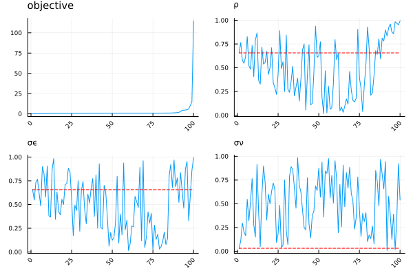

Example: Estimating an AR(1) process with noise
Consider a stochastic process that is a sum of an AR(1) process and a white noise as follows:
\[\begin{align*} y_{i,t} &= z_{i,t} + \nu_{i,t}\\ z_{i,t} &= \rho \cdot z_{i,t-1} + \varepsilon_{i,t}, \end{align*}\]
where
\[ \varepsilon_{i,t} \sim \mathcal{N}(0,\sigma_\varepsilon^2) \qquad \nu_{i,t} \sim \mathcal{N}(0,\sigma_\nu^2)\]
are i.i.d. shocks. The aim is to estimate parameters $(\rho, \sigma_\varepsilon, \sigma_\nu)$ based on a set of moments $\text{Var}(y_{t}), \text{Cov}(y_{t}, y_{t-1}), \text{Cov}(y_{t}, y_{t-2})$ computed from an observed sample of $y_{i,t}$s.
Setting up the problem
First, one needs to define an estimation mode:
struct AR1Estimation <: EstimationMode
"mode-dependent prefix of filenames used for saving estimation results"
filename::String
endDuring the estimation, one needs to evaluate the objective function for each parameter guesses. Passing invariant parameters to the objective function is possible via defining an auxiliary structure which has to be a subtype of AuxiliaryParameters. One also needs to write a corresponding function to generate a default auxiliary structure as shown below. In this case, we pass the dimensions of the simulated sample.
struct AR1AuxPar{T<:Integer} <: AuxiliaryParameters
"sample size of simulation"
Nsim::T
"number of time periods to simulate"
Tsim::T
"number of periods to discard for moment evaluation "
Tdis::T
end
AuxiliaryParameters(mode::AR1Estimation, modelname::String) = AR1AuxPar(10000, 200, 100)It is crucial that the same set of shocks are used during the parameter estimation, as otherwise convergence cannot be achieved in the local minimization phase. (The sensitivity of results to different draws of shocks can be checked via bootstrapping, as explained later in the Inference section.) This is again done by defining an appropriate subtype of an existing abstract type and a function generating a default container of shocks. In this case, one needs to draw a normal shock for $\varepsilon$ and $\nu$ for each t and n.
struct AR1PreShocks{S<:AbstractFloat} <: PredrawnShocks
"preallocated array for persistent shocks"
ϵs::Array{S,2}
"preallocated array for transitory shocks"
νs::Array{S,2}
end
function PredrawnShocks(mode::AR1Estimation, modelname::String, typemom::String,
aux::AuxiliaryParameters)
return AR1PreShocks(randn(aux.Nsim, aux.Tsim),
randn(aux.Nsim, aux.Tsim))
endIn order to compute the necessary moments of large samples, one often needs to populate large arrays with realized values(in our case, of $y_{i,t}$s). Creating separate containers for each guess for the parameter vector would be very costly, so instead this is done once before starting the estimation, and the data contained within will be repeatedly overwritten. (Note that when performing an estimation via parallel computing, these containers are internally generated separately for each thread, and hence data race is avoided.) In this example, we will compute cross-sectional moments in each time period and take their time-average in the final step. Therefore, we need to keep track of $z$ and $y$ (together its first and second lags) and the already computed moments. Defining the structure of preallocated data follows a similar logic as the previous steps.
struct AR1PrealCont{S<:AbstractFloat} <: PreallocatedContainers
z::Vector{S}
y::Vector{S}
ylag1::Vector{S}
ylag2::Vector{S}
mat::Array{S,2}
end
function PreallocatedContainers(mode::AR1Estimation, modelname::String, typemom::String,
aux::AuxiliaryParameters)
z = Vector{Float64}(undef, aux.Nsim)
y = Vector{Float64}(undef, aux.Nsim)
ylag1 = Vector{Float64}(undef, aux.Nsim)
ylag2 = Vector{Float64}(undef, aux.Nsim)
mat = Array{Float64}(undef, 3, aux.Tsim) # one row for each moment
return AR1PrealCont(z, y, ylag1, ylag2, mat)
endPreallocatedContainersNow we are in the position of constructing the objective function. This is done via writing a method for MomentMatching.obj_mom!, specializing it on the subtype AR1Estimation created before.
using Statistics
function MomentMatching.obj_mom!(mom::AbstractVector, momnorm::AbstractVector,
mode::AR1Estimation, x::Array{Float64,1}, modelname::String, typemom::String,
aux::AuxiliaryParameters, presh::PredrawnShocks, preal::PreallocatedContainers;
saving_model::Bool=false, filename::String="")
(ρ, σϵ, σν) = x
for n in 1:aux.Nsim
preal.z[n] = 0.0
end
for t in 1:aux.Tsim
for n in 1:aux.Nsim
preal.z[n] = ρ * preal.z[n] + σϵ * presh.ϵs[n, t]
preal.y[n] = preal.z[n] + σν * presh.νs[n, t]
end
if t > 2
preal.mat[3, t] = cov(preal.y, preal.ylag2)
copy!(preal.ylag2, preal.ylag1)
end
if t > 1
preal.mat[2, t] = cov(preal.y, preal.ylag1)
copy!(preal.ylag1, preal.y)
end
preal.mat[1, t] = var(preal.y)
copy!(preal.ylag1, preal.y)
end
mom[1] = mean(@view preal.mat[1, aux.Tdis:end])
momnorm[1] = mom[1]
mom[2] = mean(@view preal.mat[2, aux.Tdis:end])
momnorm[2] = mom[2]
mom[3] = mean(@view preal.mat[3, aux.Tdis:end])
momnorm[3] = mom[3]
endWe give the names and ranges of the targeted parameters by writing a method of parambounds. During the global phase of the estimation, the region within 'global' bounds is searched. Violating 'hard' bounds during the local phase induces a penalty to redirect the algorithm towards the allowed range.
function MomentMatching.parambounds(mode::AR1Estimation)
full_labels = [ "ρ", "σϵ", "σν"]
full_lb_hard = [ 0.0, 0.0, 0.0 ]
full_lb_global = [ 0.0, 0.0, 0.0 ]
full_ub_global = [ 1.0, 1.0, 1.0 ]
full_ub_hard = [ 1.0, Inf, Inf ]
return full_labels, full_lb_hard, full_lb_global, full_ub_global, full_ub_hard
endNext, we specify which moments are targeted during the estimation. In an actual application, this function would most likely read in values from a dataset, but here we just give three arbitrary numbers for each moments.
function MomentMatching.datamoments(mode::AR1Estimation, typemom::String)
momtrue = [0.8, 0.45, 0.4] # made up numbers
mmomtrue = deepcopy(momtrue)
return hcat(momtrue, mmomtrue)
endFinally, we name the targeted moments. The momentnames function has to return a DataFrame with two columns, where one targeted moment corresponds to one row. If the two moments have coinciding values in the first column, the corresponding results will be visualized together, as shown in section Estimation.
using DataFrames
function MomentMatching.momentnames(mode::AR1Estimation, typemom::String)
moments = fill("Cov(y_t,y_t-j)", 3)
lags = string.(0:2)
return DataFrame(Moment=moments, Lags=lags)
endEstimation
After defining an estimation setup and a structure supplying numerical settings, one can perform the estimation as follows. After checking 100 points in the global phase, a local minimization takes place using the Nelder-Mead algorithm, stated from the 10 global points with the lowest objective function values.
using OptimizationOptimJL
setup = EstimationSetup(AR1Estimation("ar1estim"), "", "")
npest = NumParMM(setup; Nglo=100, Nloc=10,
local_opt_settings = (algorithm = NelderMead(), maxtime = 30.0))
Performing global stage... 2%|▌ | ETA: 0:03:00
Performing global stage... 100%|█████████████████████████| Time: 0:00:05
Performing local stage... 20%|█████▎ | ETA: 0:00:42
Performing local stage... 40%|██████████▍ | ETA: 0:00:25
Performing local stage... 100%|██████████████████████████| Time: 0:00:29The estimated parameters can be displayed as follows:
tableest(setup, est)| Row | Variable | Point estimate |
|---|---|---|
| String | Float64 | |
| 1 | ρ | 0.888 |
| 2 | σϵ | 0.326 |
| 3 | σν | 0.542 |
The match with targeted moments can either be displayed as a table
tablemoms(setup, est)| Row | Moment | Lags | Sample values | Model values |
|---|---|---|---|---|
| String | String | Float64 | Float64 | |
| 1 | Cov(y_t,y_t-j) | 0 | 0.8 | 0.8 |
| 2 | Cov(y_t,y_t-j) | 1 | 0.45 | 0.45 |
| 3 | Cov(y_t,y_t-j) | 2 | 0.4 | 0.4 |
or visualized on a figure:
using Plots
fmoms(setup, est)GKS: cannot open display - headless operation mode active
As in this case 3 parameters were estimated based on 3 moments (and hence parameters are exactly identified), the resulting match is very close.
Diagnostics
When the objective function is highly non-linear, it is in general difficult to know if the obtained parameter estimate indeed corresponds to a global minimizer. One concern would be that the obtained local optimum is 'too local', i.e. its basin of attraction is too narrow. In this case the local optimum would be very sensitive to the respective initial point. To judge the accuracy of the estimated parameter vector, two heuristic methods are available in this package.
First, it is possible to visualize how the objective function depends on varying the parameter estimates one-at-a-time (keeping the other parameters constant), around the best point.
marg = marginal_fobj(setup, est, 17, fill(0.1, 3))
fmarg(setup, est, marg)Second, one can visualize how sensitive the corresponding parameter values are to the rank of the corresponding global or local point, with respect to their objective function values. This is informative on the sufficient number of global and local points.
Output from the global stage is available via the global keyword.
fsanity(setup, est, glob = true)
By default, results from the local stage are shown.
fsanity(setup, est)Inference
Parametric Bootstrap
Even if the model is correctly specified, there are two reasons why parameters are estimated with an error:
- The targeted population moments are obtained from a finite sample.
- If evaluating the objecting function involves uncertainty, the whole estimation procedure is conducted with one particular draw of shocks. This makes results potentially sensitive to this specific realization of shocks.
One can gauge the joint effect of these forces on the precision of the estimates via parametric bootstrapping.
- First, using the obtained parameter estimates, $N_{sample}$ independent samples are created to mimic the uncertainty in the data generating process. The targeted moments are then computed from each of these samples. Note that the size of the simulated samples have to coincide with the actual data sample which was used to compute the data moments.
- Second, if computing the objective function involves random draws, $N_{seed}$ number of different shocks are draws.
Then for each pair of alternative moments and seeds, the local stage of the estimation is repeated starting from the best local point of the original estimation. The distribution of the resulting $N_{sample} \cdot N_{seed}$ new estimates can then be used to generate confidence intervals.
Tdis = 20 # burn in
Tdata = 40 # true data length
Ndata = 500 # true sample size
Nsample = 15 # number of samples used for bootstrap
Nseed = 15 # number of shock simulations used for bootstrap
auxmomsim = AR1AuxPar(Ndata, Tdata + Tdis, Tdis)
boot = param_bootstrap_result(setup, est, auxmomsim, Nseed, Nsample, Ndata, saving=false)
fbootstrap(setup, est, boot)
Performing bootstrap... 1%|▎ | ETA: 0:13:17
Performing bootstrap... 2%|▌ | ETA: 0:10:47
Performing bootstrap... 5%|█▍ | ETA: 0:08:49
Performing bootstrap... 7%|█▉ | ETA: 0:08:29
Performing bootstrap... 8%|██▎ | ETA: 0:08:16
Performing bootstrap... 9%|██▋ | ETA: 0:08:06
Performing bootstrap... 11%|███ | ETA: 0:07:57
Performing bootstrap... 12%|███▍ | ETA: 0:07:48
Performing bootstrap... 13%|███▊ | ETA: 0:07:42
Performing bootstrap... 15%|████▏ | ETA: 0:07:33
Performing bootstrap... 16%|████▌ | ETA: 0:07:26
Performing bootstrap... 17%|████▉ | ETA: 0:07:19
Performing bootstrap... 18%|█████▏ | ETA: 0:07:14
Performing bootstrap... 20%|█████▌ | ETA: 0:07:07
Performing bootstrap... 20%|█████▊ | ETA: 0:07:03
Performing bootstrap... 22%|██████▏ | ETA: 0:06:57
Performing bootstrap... 23%|██████▍ | ETA: 0:06:52
Performing bootstrap... 24%|██████▊ | ETA: 0:06:44
Performing bootstrap... 25%|███████ | ETA: 0:06:39
Performing bootstrap... 26%|███████▍ | ETA: 0:06:31
Performing bootstrap... 28%|███████▊ | ETA: 0:06:23
Performing bootstrap... 29%|████████▏ | ETA: 0:06:16
Performing bootstrap... 30%|████████▍ | ETA: 0:06:11
Performing bootstrap... 31%|████████▋ | ETA: 0:06:07
Performing bootstrap... 32%|█████████ | ETA: 0:05:59
Performing bootstrap... 33%|█████████▎ | ETA: 0:05:54
Performing bootstrap... 34%|█████████▋ | ETA: 0:05:47
Performing bootstrap... 36%|██████████ | ETA: 0:05:39
Performing bootstrap... 37%|██████████▌ | ETA: 0:05:29
Performing bootstrap... 39%|██████████▉ | ETA: 0:05:22
Performing bootstrap... 40%|███████████▎ | ETA: 0:05:14
Performing bootstrap... 41%|███████████▌ | ETA: 0:05:09
Performing bootstrap... 42%|███████████▉ | ETA: 0:05:02
Performing bootstrap... 44%|████████████▎ | ETA: 0:04:55
Performing bootstrap... 45%|████████████▋ | ETA: 0:04:48
Performing bootstrap... 48%|█████████████▍ | ETA: 0:04:34
Performing bootstrap... 50%|██████████████ | ETA: 0:04:22
Performing bootstrap... 51%|██████████████▏ | ETA: 0:04:17
Performing bootstrap... 52%|██████████████▌ | ETA: 0:04:10
Performing bootstrap... 55%|███████████████▎ | ETA: 0:03:56
Performing bootstrap... 56%|███████████████▌ | ETA: 0:03:52
Performing bootstrap... 57%|███████████████▉ | ETA: 0:03:45
Performing bootstrap... 58%|████████████████▎ | ETA: 0:03:38
Performing bootstrap... 60%|████████████████▉ | ETA: 0:03:27
Performing bootstrap... 61%|█████████████████▏ | ETA: 0:03:22
Performing bootstrap... 63%|█████████████████▌ | ETA: 0:03:15
Performing bootstrap... 64%|█████████████████▊ | ETA: 0:03:10
Performing bootstrap... 65%|██████████████████▏ | ETA: 0:03:04
Performing bootstrap... 66%|██████████████████▌ | ETA: 0:02:57
Performing bootstrap... 68%|██████████████████▉ | ETA: 0:02:50
Performing bootstrap... 69%|███████████████████▎ | ETA: 0:02:43
Performing bootstrap... 70%|███████████████████▋ | ETA: 0:02:36
Performing bootstrap... 72%|████████████████████ | ETA: 0:02:29
Performing bootstrap... 72%|████████████████████▎ | ETA: 0:02:24
Performing bootstrap... 74%|████████████████████▋ | ETA: 0:02:17
Performing bootstrap... 75%|█████████████████████ | ETA: 0:02:10
Performing bootstrap... 76%|█████████████████████▍ | ETA: 0:02:03
Performing bootstrap... 78%|█████████████████████▊ | ETA: 0:01:56
Performing bootstrap... 79%|██████████████████████ | ETA: 0:01:52
Performing bootstrap... 80%|██████████████████████▍ | ETA: 0:01:45
Performing bootstrap... 81%|██████████████████████▊ | ETA: 0:01:38
Performing bootstrap... 82%|███████████████████████ | ETA: 0:01:33
Performing bootstrap... 84%|███████████████████████▍ | ETA: 0:01:26
Performing bootstrap... 86%|████████████████████████▏ | ETA: 0:01:12
Performing bootstrap... 87%|████████████████████████▍ | ETA: 0:01:07
Performing bootstrap... 88%|████████████████████████▋ | ETA: 0:01:03
Performing bootstrap... 89%|████████████████████████▉ | ETA: 0:00:58
Performing bootstrap... 90%|█████████████████████████▏ | ETA: 0:00:53
Performing bootstrap... 91%|█████████████████████████▌ | ETA: 0:00:46
Performing bootstrap... 92%|█████████████████████████▊ | ETA: 0:00:42
Performing bootstrap... 93%|██████████████████████████▏ | ETA: 0:00:35
Performing bootstrap... 95%|██████████████████████████▌ | ETA: 0:00:28
Performing bootstrap... 96%|██████████████████████████▉ | ETA: 0:00:21
Performing bootstrap... 98%|███████████████████████████▍| ETA: 0:00:12
Performing bootstrap... 100%|████████████████████████████| Time: 0:08:39